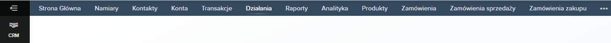

CRM zawiera główne funkcjonalności koordynujące procesy sprzedażowe.Wyświetlany
jest tutaj podgląd bieżących zadań, pozyskanych aktualnych namiarów oraz ilość zadań w
trakcie (wraz z poziomem zaawansowania).

Namiary : moduł pozwalający na tworzenie i import danych teleadresowych w celu zbudowania bazy danych potencjalnych klientów ; z pomocą przychodzi tu analizator e-maili, możliwa jest również standaryzacja formularzy sieci Web celem kompatybilizacji danych z Google,Facebook,Wordpress oraz Jomla. Istnieje również opcja bezpośredniego importu kontaktów Google z systemem Zoho, jak również import danych z plików .xls, .xlsx, .vcf, lub .csv (powyżej 5000 rekordów jedynie .csv),a także całych baz z innych CRM ( SalesForce,Microsoft Dynamics 365,Pipedrive, Insightly bądź Highrise).
Konto – możliwość dodawania rozróżnień poszczególnych działów/organizacji, z którymi współpracujemy
Transakcje : aplet porządkujący transakcje względem dat,działów
Działania : możliwość integracji systemu telefonicznego jednym kliknięciem ; możliwość ręcznego rejestrowania rozmów ; interaktywny planer rozmów, wydarzeń i zadań

Sekcja Raporty jest zaawansowanym generatorem raportów,zawierającym ponadto 20 najbardziej użytecznych, gotowych algorytmów, do tego istnieje oczywiście możliwość ręcznego wprowadzenia własnych kryteriów.
Analityka to interaktywny moduł wizualizujący dane ; tworzy przejrzyste wykresy dla namiarów, transakcji, statystyk wykonania zadań oraz trendów sprzedażowych (również dla konsumenta potencjalnego)
Produkty : w przejrzysty sposób pozwala opisywać produkty parametrami ważnymi dla CRM : kod, daty początków/końca sprzedaży, ilości magazynowe, osoba odpowiedzialna, jednostka zużycia oraz rozmiar zamówień
Zamówienia: panel Możliwe jest także wygenerowanie przez klienta zamówienia sprzedaży, będącego jej potwierdzeniem, jak i również zamówienia
Zoho potrafi również tworzyć faktury. Sekcja Kanały pozwala decydować, które informacje chcemy otrzymywać.
Zakładka Kampanie pozwala planować, monitorować i zarządzać przebiegami kampanii reklamowych.
Sekcja Dostawcy pozwala tworzyć profile przewoźników oraz dodać ich cenniki wraz ze specyficznymi warunkami dostawy.
Zgłoszenia” to miejsce na wsparcie postzakupowe dla klienta, wraz z zakładką „Rozwiązania” pozwalają stanowić
„Dokumenty” to po prostu przestrzeń dyskowa współdzielona przez użytkowników w grupie projektowej
„Wizyty” pozwalają śledzić ruch na stronie – wystarczy jedynie skopiować kod modułu odpowiedzialny za tracker i chat.
SalesInbox to moduł łączący funkcjonalność standardowej poczty e-mail z algorytmem inteligentnie łączącym maile, daty i dane. Oferuje funkcję priorytetyzacji wiadomości, tworzenia listy mailingowej, poprzez integrację skrzynki pocztowej z Zoho CRM.
SalesIQ to funkcjonalność pozwalająca na monitorowanie, rejestrowanie aktywności zachowań oraz chatów, jak i zarówno kontakt z klientem odwiedzającym stro(odpowiada za pojawienie się okienka chatu z konsultantem on-line). Możliwe jest też zaprogramowanie osobistego bota o określonych zachowaniach (powiadomienia, przypomnienia). Pozwala ona również na zablokowanie dostępu do platformy określonym adresom IP.
Panel główny pozwala na pozyskanie informacji o użytkownikach aktualnie przeglądających maszą stronę, ich historię odwiedzin oraz czatów, informacji zwrotnych (feedback)
W zakładce “Automatyzacja” możliwe jest ustawienie reguł warunkujących pojawienie się okienka chatu na ekranie wyświetlającego stronę, takich jak pożądany kraj pochodzenia, bądź używany system operacyjny (Windows, macOS, Linux), a także przekierowanie klienta do konkretnego operatora chatu ze względu na liczbę przeprowadzonych z nim wcześniej rozmów. Istnieje ponadto opcja monitorowania prowadzonych połączeń po adresie e-mail bądź IP prowadzącego - pozwala to na kontrolę jakości pracy naszych towarzyszy.
Harmonogram wiadomości e-mail pozwala na ustawienie reguł generowania raportów (data,czas), co ułatwia pracę księgowości.
Aplet Templates pozwala na łatwe tworzenie strony FAQ, a także krótkich artykułów które mogą być wysyłane w okienkach chatu konusmenckiego, oraz mailingu wysyłanego po spełnieniu konkretnego warunku poprzez wizytuącego stronę.
Zoho oferuje również opcję punktacji potencjalnego klienta celem sprofilowania go, na postawie jego zachowań, z możliwością ustawienia interwału przeliczania punktów po czasie jego dłuższej nieaktywności.
SalesIQ ponadto oferuje dodatki dla narzędzi analitycznych i platform do marketingu e-mail innych wydawców, które pozwalają zwiększyć skuteczność działań przez monitorowanie odwiedzających Twoją stronę internetową w czasie rzeczywistym. Kompatybilne aplikacje to m.in. Google Analytics, Tag Manager, MixPanel, HubSpot,Bronto, CampainMaster bądź Zendesk. Możliwe jest wyświetlanie, wysyłanie e-mailem i zapisywanie w formie dokumentów skonsolidowanych raportów biznesowych dotyczących portali na podstawie ocen użytkowników, czasu obsługi, statusu i regionów odwiedzających oraz wykorzystania przez poszczególne działy. Raporty te można dowolnie filtrować na podstawie wybranego zakresu.
Raporty SalesIQ - zakładka pozwala na wyświetlanie, wysyłanie e-mailem i zapisywanie w formie dokumentów skonsolidowanych raportów biznesowych dotyczących portali na podstawie ocen użytkowników, czasu obsługi, statusu i regionów odwiedzających oraz wykorzystania przez poszczególne działy. Raporty te można dowolnie filtrować na podstawie wybranego zakresu.
Motivator – jak sama nazwa wskazuje, spełnia funkcję motywującą. Kodyfikuje dane sprzedażowe, wyświetlając je w przejrzystej formie. Wspomaga współzawodnictwo pomiędzy pracownikami, oferuje również możliwość ekspresowego stworzenia wizualizacji danych w formie wykresów ukazanych na szablonowo tworzonym krótkim filmie. Bazuje na KPI (kluczowych wskaźnikach efektywności) - możemy skorzystać z gotowych szablonów KPI lub stworzyć własne. Istotną funkcjonalnością jest tworzenie celów (Targets) i wyzwań (Contests), których postępy są diagramizowane na miesięcznej osi czasu względem wybranego wskaźnika.
Survey – szybki kreator ankiet z dużą ilością gotowych szablonów oraz możliwością tworzenia własnych.
Zoho Sign - moduł implementujący użycie podpisu elektronicznego, co pozwala oszczędzić tony papieru i godziny czasu straconego na transportowanie tradycyjnych dokumentów. Pozwala również przechowywać gotowe,podpisane szablony oraz generować raporty dotyczące tegoż działu.
Do naszej dyspozycji oddana zostaje ponadto wirtualna asystkentka ZIA, spełniająca rolę działu Q&A online. Potrafi ona również dokonywać prostych zestawień danych.
Desk- wirtualny odpowiednik biurka, zawiera następujące funkcjonalności :
HQ : generuje diagram przepustowości mailingu we/wy, ruchu na żywo, najbardziej wielowątkowego biletu oraz pokazuje liczbę agentów on-/offline. Umożliwia również publikację bieżących wyników pracy w lokalnym kanale informacyjnym.
Bilety - bilet to prywatna wiadomość mogąca zawierać informację lub problem/zadanie do wykonania, które należy załączyć w odpowiedzi. Istnieje wyszczególnienie priorytetu oraz klasyfikacji,a także kolejkowanie.
Zalety
- kompletny zestaw narzędzi
- możliwość rozbudowy o dodatki (Marketplace)
- wsparcie niezależnych deweloperów
- międzyplatformowa kompatybilność
Wady
- początkowo ilość dostępnych funkcjonalności potrafi przytłoczyć
- niepełne spolszczenie wprowadza chaos